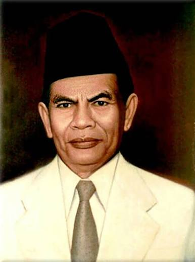

INI ADALAH HALAMAN KARAKTER 1
Mohammad Yamin

- Anggota Sumpah Pemuda
- Lahir 23 Agustus 1903
- Mohammad Yamin: Peran Mohammad Yamin sangat menonjol sebagai sekretaris kongres sekaligus perumus teks Sumpah Pemuda. Sebagai seorang sastrawan dan ahli hukum, ia menyusun draf resolusi yang kemudian dikenal sebagai trilogi Sumpah Pemuda (satu tanah air, satu bangsa, dan satu bahasa persatuan). Yamin mematangkan konsep bahasa Indonesia sebagai bahasa pemersatu dan menyodorkan secarik kertas berisi rumusan tersebut kepada Soegondo saat kongres berlangsung untuk disetujui.